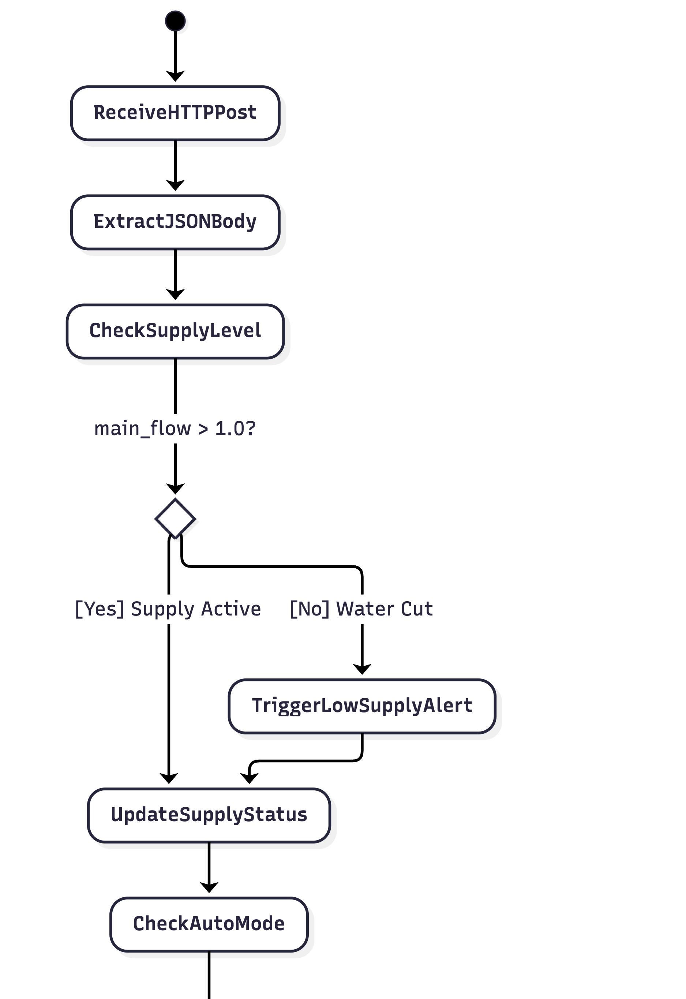
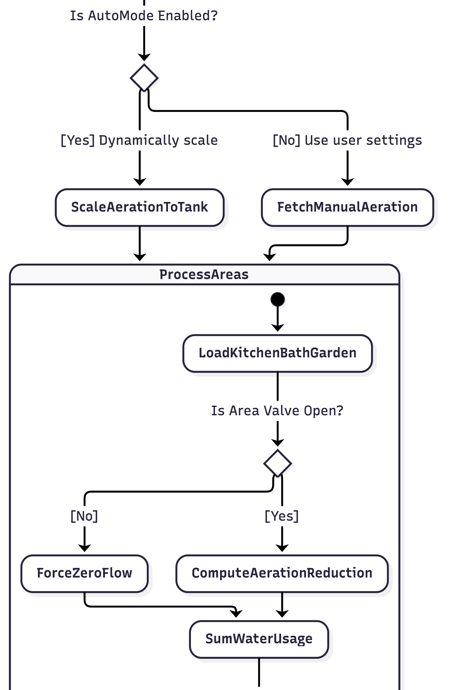
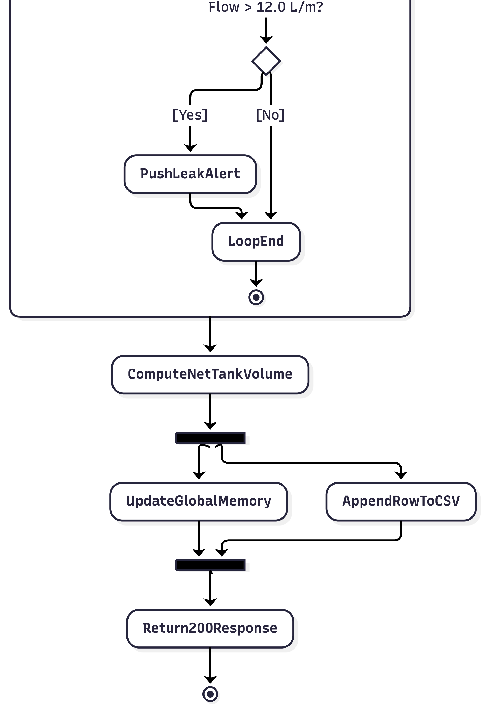
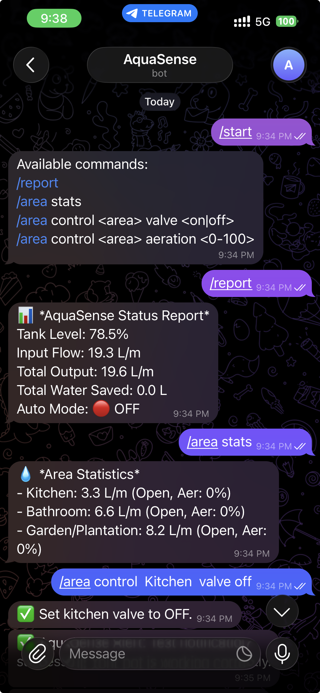
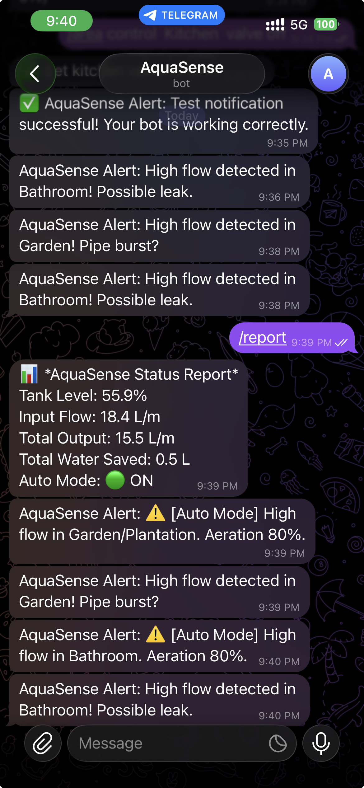
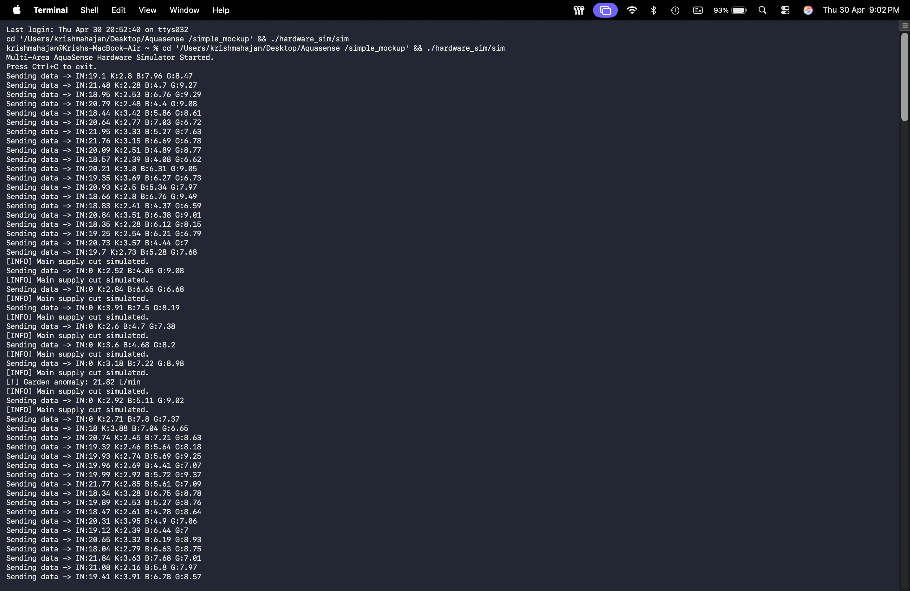

AquaSense
Smart Water Monitoring System
D.K.T.E. Society’s Textile and Engineering Institute, Ichalkaranji
Under Guidance of V.V. Kheradkar | Department of Computer Science & Engineering
Team
| MR. Krish Mahajan | 24UCS056 |
| MR. Shreyash Chougule | 24UCS023 |
| MR. Pranav Chougule | 24UCS021 |
| MR. Varad Dake | 24UCS024 |
The Challenge
Excessive Wastage
Unregulated consumption in shared environments leads to massive resource depletion.
Blind Spots
Manual monitoring provides delayed insights, making proactive management impossible.
No Zonal Tracking
Inability to identify specific high-consumption areas.
Overflow Crises
Lack of automated leveling results in frequent, damaging tank overflows.
Strategic Objectives
- Core Aim: Engineer a comprehensive, IoT-based smart water monitoring ecosystem.
- Deploy multi-node flow sensors for independent area-wise consumption profiling.
- Implement a robust backend to parse real-time telemetry for tank levels and flow rates.
- Construct an automated actuation layer utilizing servo-controlled valves to mitigate overflow.
- Deliver actionable insights via a modern SaaS-style live dashboard.
Paradigm Shift
Legacy Systems
- Manual checks and outdated ledgers
- Aggregated data (no zonal granularity)
- Post-incident overflow detection
- Zero automated motor actuation
AquaSense
- Autonomous IoT data pipelines
- Granular, multi-area analytics
- Pre-emptive anomaly alerts
- Intelligent Auto-Mode
Data & Actuation Pipeline
Core Architecture Modules
Sensor Simulator
Virtualizes telemetry for rigorous software stress-testing without hardware bounds.
Telemetry Engine
Flask-powered backend handling concurrent I/O from multiple edge nodes.
Adaptive Aeration
Dynamic logic optimizing water oxygenation based on reservoir latency.
Anomaly Detection
Algorithmic identification of deviations indicating pipe bursts or leaks.
SaaS Dashboard
Glassmorphism Web UI providing total observability and manual overrides.
Telegram Bot
Two-way asynchronous chat ops for instant critical alerts and remote actuation.
Architectural Diagram

Use case Diagram

Dataflow Diagram

Class Diagram

Sequence Diagram

Activity Diagram (Full View)

Activity Diagram (Part 1/3)

Activity Diagram (Part 2/3)

Activity Diagram (Part 3/3)

Integration Testing
| Test ID | Interface | Test Scenario | Input Data | Expected Outcome | Status |
|---|---|---|---|---|---|
| IT-01 | C++ -> Flask | Sensor Data Ingestion | JSON: {"main_flow": 10.0} | HTTP 200 OK; Backend data updated | Pass |
| IT-02 | Flask -> CSV | Persistence Validation | Data Update Event | File history.csv size increases | Pass |
| IT-03 | Flask -> JS | API Data Retrieval | GET /api/data | Valid JSON received by frontend | Pass |
| IT-04 | Flask -> Telegram | Alert Notification | Critical Leak Trigger | Push notification received on mobile | Pass |
| IT-05 | Telegram -> Flask | Remote Command | /area control kitchen valve off | Kitchen valve status set to False | Pass |
Unit Testing
| Test ID | Component | Test Scenario | Input Data | Expected Outcome | Status |
|---|---|---|---|---|---|
| UT-01 | Python Backend | Aeration Scaling Logic | tank_level = 10% | Aeration set to 90% | Pass |
| UT-02 | Python Backend | CSV Logging Function | system_data object | Row appended to history.csv | Pass |
| UT-03 | C++ Simulator | Random Flow Gen | Base flow = 5.0 | Output within 10% variance | Pass |
| UT-04 | JS Frontend | Unit Conversion | Value: 1000ml | Display: "1.0 L" | Pass |
| UT-05 | Python Backend | Alert Trigger Logic | Flow > 12.0 L/m | "High Flow" alert string generated | Pass |
System Testing (End-to-End)
| Test ID | Scenario Description | Input/Trigger | Expected System Response | Status |
|---|---|---|---|---|
| ST-01 | Normal Operation | Valid Sensor Data | Dashboard updates every 2s; Charts reflect live usage. | Pass |
| ST-02 | Critical Tank Level | Level < 20% | Auto-Mode triggers; Flow restricted; Critical alert sent. | Pass |
| ST-03 | Leak Detection | Flow > 14 L/m | "High Flow Anomaly" alert; Valve automatically capped at 20%. | Pass |
| ST-04 | Supply Cut Fallback | main_flow = 0.0 | Dashboard shows "Water Cut"; System enters conservation. | Pass |
| ST-05 | Error Resilience | Empty POST Request | HTTP 400 Error; Server remains stable and active. | Pass |
| ST-06 | Telegram Monitoring | /report command | Bot replies with Tank Level, Usage, and Auto-Mode status. | Pass |
System Outputs
A visual walkthrough of the executed modules.
Dashboard Home View
Live Instance: aquasense-9g0t.onrender.com
Analytics Main Console
Live Analytics Console
Analytics Detail View
Granular Consumption Reporting
Actuation Controls
Remote Actuation & Valve Control
Administration Panel
System Configuration & API Keys
Telegram Bot Integration


Hardware Simulator Engine

Data Analysis Graph
Algorithmic Data Synthesis
Technology Stack
Hardware Layer
- ESP32 / ESP8266 Microcontrollers
- YF-S201 Hall-Effect Flow Sensors
- Ultrasonic Depth Sensors
- Servo-controlled Solenoid Valves
Software Layer
- Python / Flask REST API
- HTML5/CSS3 Glassmorphism UI
- Chart.js Analytics Visualization
- Telegram Bot API Integration
System Impact
35%
Max Water Savings
1.5s
Response Latency
100%
Zonal Traceability
Live System Demo
We will now switch over to the live AquaSense Dashboard to demonstrate real-time hardware telemetry, anomaly detection, and remote actuation.
aquasense-9g0t.onrender.com
Project Conclusion
AquaSense provides a highly scalable and automated ecosystem for water management. By integrating IoT sensor nodes with a real-time analytics dashboard, the system successfully enables proactive conservation, rapid anomaly detection, and robust remote actuation.
Thank You
Open for Questions & Discussion